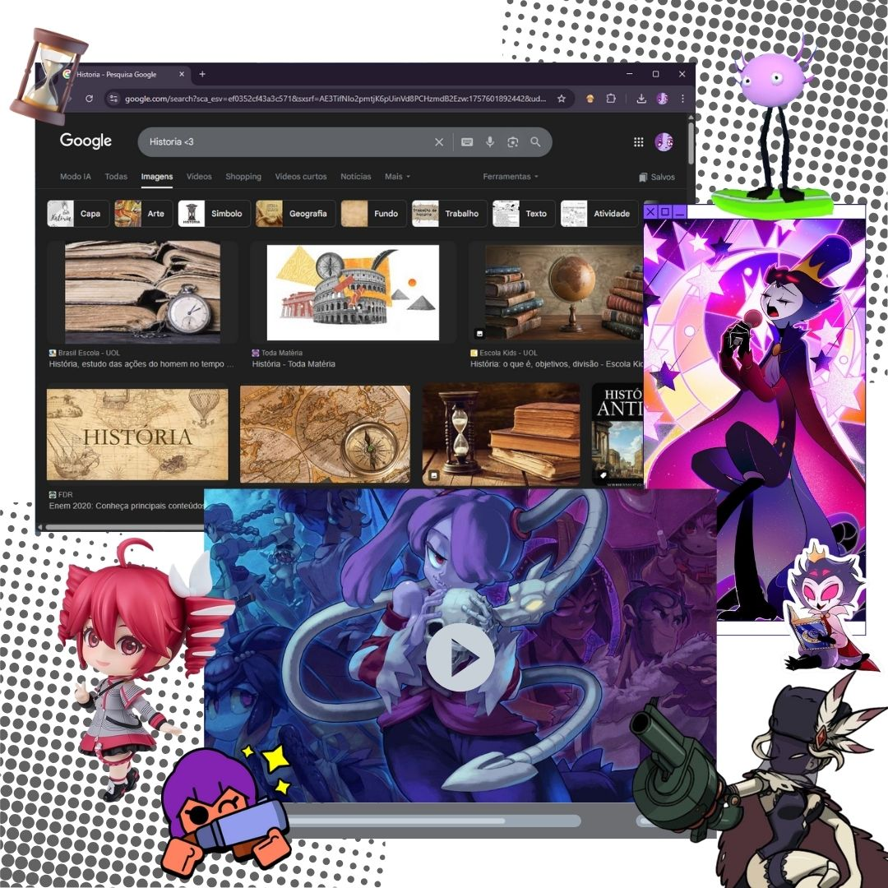
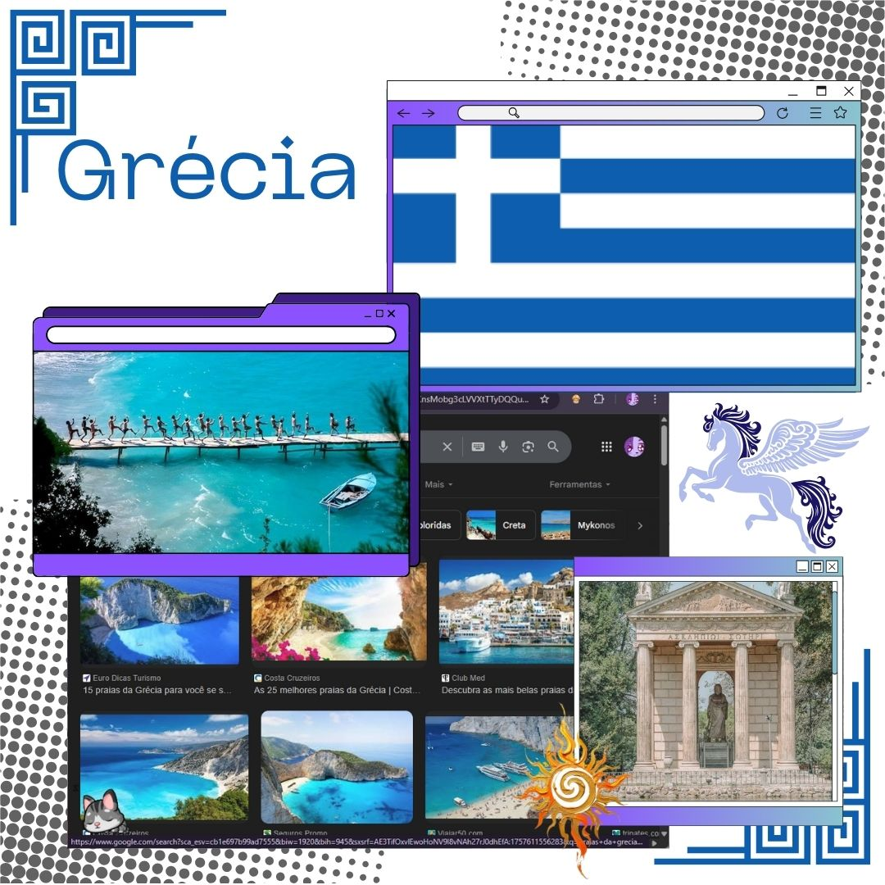
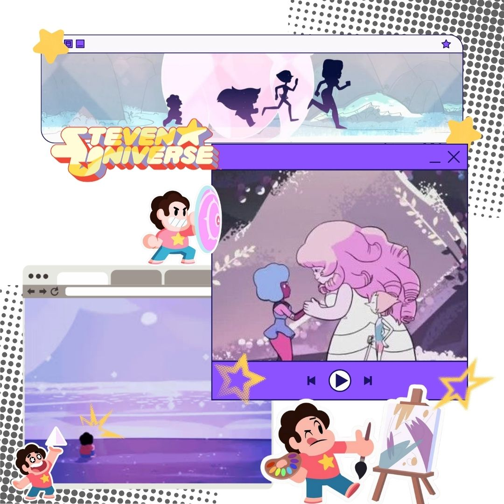
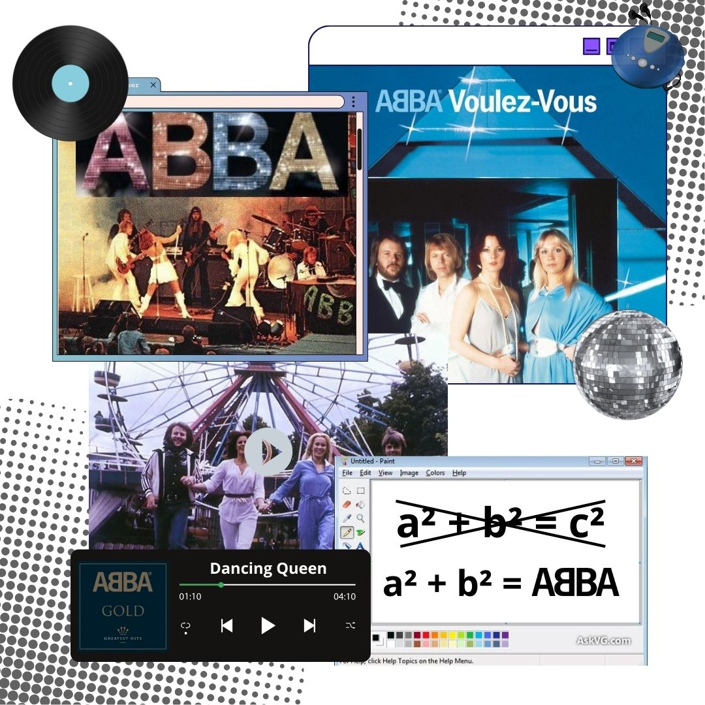

Gosto muito de tudo o que envolve molho branco, mas a mistura entre molho branco broculis e bacon é maravilhosa!
Meu passatempo

Gosto muito do estudo da historia pois por meio da historia podemos muito alem de descobrir o passado, podemos entender o presente e prever o futuro. Tambem gosto muito de jogar e assistir series indies do meu tempo livre
Um lugar que quero conhecer

Eu gostaria de ir para a Grecia ver sua ilustre historia de perto
Meu desenho favorito

Minha banda favorita:
ABBA

Historia do ABBA
ABBA foi uma banda pop sueca formada em Estocolmo em 1972, composta por Agnetha Fältskog, Björn Ulvaeus, Benny Andersson e Anni-Frid Lyngstad. O grupo ganhou fama internacional após vencer o Festival Eurovisão da Canção em 1974 com a música "Waterloo", marcando o início de uma carreira de enorme sucesso mundial. Com hits como "Dancing Queen", "Mamma Mia" e "Take a Chance on Me", o ABBA se destacou por suas melodias cativantes, harmonias vocais marcantes e produção musical refinada. Apesar de terem encerrado as atividades em 1982, sua música continua influente e popular, especialmente com o sucesso do musical e do filme Mamma Mia!. Em 2021, o grupo surpreendeu os fãs ao lançar novas músicas após quase 40 anos de pausa.
Por que eu gosto tanto do ABBA?
ABBA é uma banda que por mais que seja antiga ainda mantem sua relevancia no cenario musical mundial, é uam banda com uma discografia vasta que vai dês de musicas mais alegres e que compoem a estetica disco até musicas mais emocinais(a maioria delas foi uma consequencia dos divorcios dos dois casais que compunham a banda, mas isso é fofoca para outra hora)